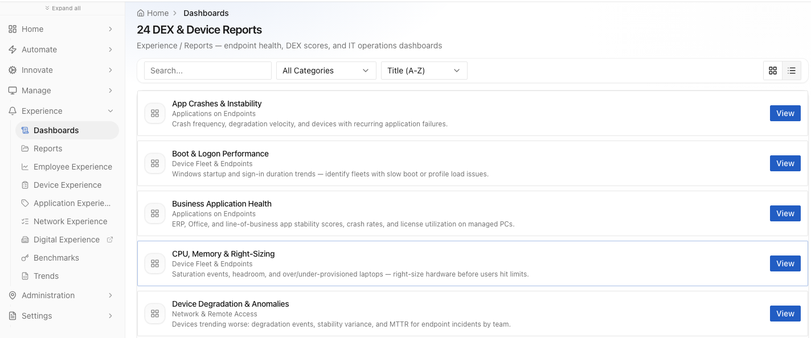

Home / Platform
Platform overview
The operating system for the digital workplace.
Intelligence continuously measures experience, gathers context, identifies new opportunities to automate, resolves issues as they emerge, keeps devices and environments compliant, and orchestrates work across the IT ecosystem — all on one engine, one context layer and one knowledge library.
What the platform does
Four things, and they are not four products.
Each one is the input to the next. Measurement finds the opportunity, automation closes it, governance keeps it closed, and orchestration carries the work into the systems where the rest of it lives.
DEX Intelligence
Continuously measure devices, applications, networks and employee experience. Surface anomalies, trends and emerging issues, understand their impact, and turn every insight into an opportunity to improve and automate.
DEX intelligence doesn't end in a dashboard →02Automate Issues
The context layer gives intelligence the knowledge to extend its capabilities to new symptoms across the OS, applications and resources — without code. Validate once, then deliver through autoheal, self-service or assisted IT.
Turn every symptom into a reusable capability →03Compliance & Governance
Software, patches, security updates and policies automated by persona, with drift continuously detected and restored — on the same engine that heals the device, not a second agent.
IT management automated, compliance enforced →04Orchestrate the IT Ecosystem
The device is where the symptom shows up, rarely where the work ends. APIs, MCP servers, data and system capabilities become no-code building blocks for analysis, action and orchestration across IT.
The device is just the beginning →
What makes it possible
The layer under all four.
Every pillar above runs on the same three things: a context layer that decides what a symptom means here, a fixed capability engine that already knows how to act, and a knowledge library that starts full and keeps growing.
The framework underneath
AIM-X. Automate with Intelligence. Manage the eXperience.
Internally the four pillars run as a closed loop we call AIM-X. Nobody has to learn the acronym to buy the platform — but if you want to know why coverage compounds instead of stalling, this is the mechanism.
Why a loop and not a module list
A catalogue of parts doesn’t compound. A loop does.
Every DEX platform on the market is organised the same way: a set of named modules you buy and wire together. That structure tells you what the vendor built. It doesn't tell you what happens on day ninety, when the estate has drifted and the automations somebody wrote in month one have started failing.
AIM-X is organised around what happens after an automation exists, because that is where the economics actually live. An automation that runs once is a script. An automation whose outcome is measured, whose measurement reveals the next gap, and whose next gap becomes new capability without an engineering project — that is a system that gets cheaper to extend over time.
Coverage compounds when the next automation costs almost nothing. That is the entire argument, and every part of AIM-X exists to serve it.
The four pillars are not four products. They are four things that have to be true at the same time for the loop to close, and they run on one engine, one context layer and one knowledge library.
See a symptom resolve itself.
Bring us your top three call drivers. We'll show you the same three resolving on a live endpoint — with no script written, and nothing left running to watch for them